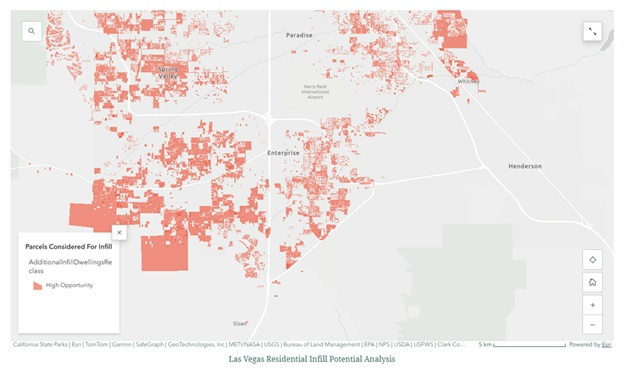
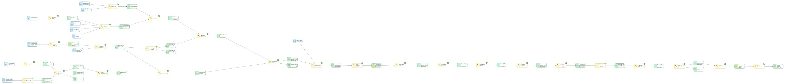
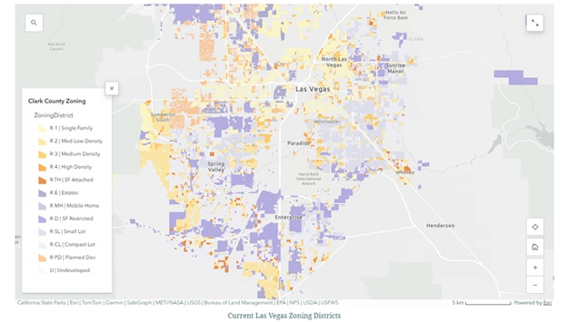
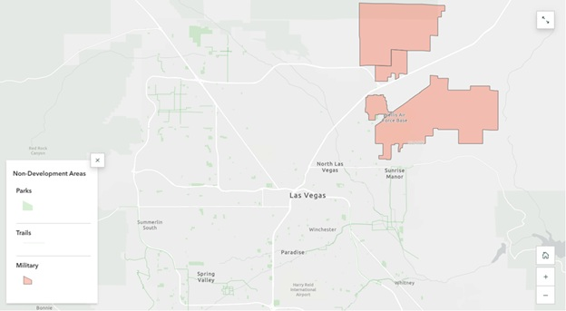
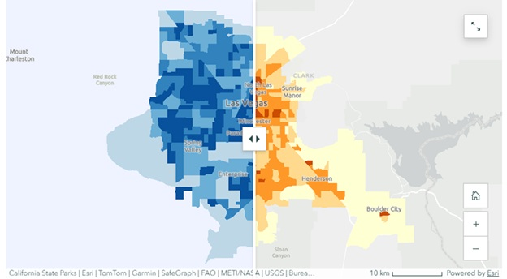
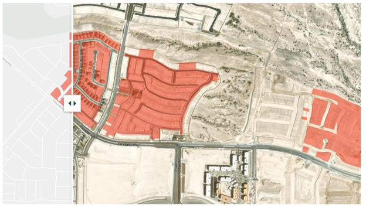

Urban Planning · ArcGIS Pro · ModelBuilder
A parcel-level analysis of development capacity in Clark County, Nevada
Las Vegas continues to grow — but where can that growth still happen? As available land becomes more limited, understanding where new housing can fit within the existing city is becoming increasingly important.
This analysis explores existing development patterns and identifies areas with remaining residential infill potential.
This analysis was developed in ArcGIS Pro using ModelBuilder by integrating parcel, zoning, dwelling unit, and constraint datasets.
To answer this, areas that cannot be developed — such as parks, trails, and military land — were removed from consideration. What remains highlights where new housing could realistically be added.

ModelBuilder workflow — ArcGIS Pro 3.6.3
Parcels were filtered to remove constrained areas such as public lands and incompatible zoning. Spatial analysis techniques — including erase and spatial join operations — were used to isolate developable parcels and estimate infill potential based on zoning constraints.
Not all land can support new development. Parks, trails, and protected areas reduce the amount of space available for housing and play a key role in shaping where growth can occur.

Las Vegas Non-Developable Land
Existing dwelling units are concentrated in higher-density census tracts across the Las Vegas Valley. These areas represent the majority of current residential development and reflect established urban growth patterns.

Parks, Trails, and Military Land

Urban sprawl gradient
Denser parts of the city tend to have fewer opportunities for new development, while lower-density areas often have more room to grow. Residential density is shown in blue, while urban sprawl is represented using a yellow-to-red gradient.
Understanding density is only part of the story. To better evaluate development patterns, we also look at urban sprawl.
High Opportunity Areas
Residential infill potential is limited across the study area and is primarily confined to vacant or underutilized parcels. High-density areas show minimal remaining capacity, indicating they are largely built out.
Opportunities for additional development are more common in lower-density areas where land remains available.

Las Vegas Residential Infill Potential Analysis — parcel level
At the parcel level, opportunities for additional housing are limited across the city. While some areas show little to no potential, others stand out as strong candidates for infill development. Most of the opportunities for infill have already started.
These results show that opportunities for new housing are limited and unevenly distributed. As Las Vegas continues to grow, future development will depend on how effectively these remaining areas are used.
The challenge is no longer where Las Vegas can grow — but how efficiently it can use the space that remains.